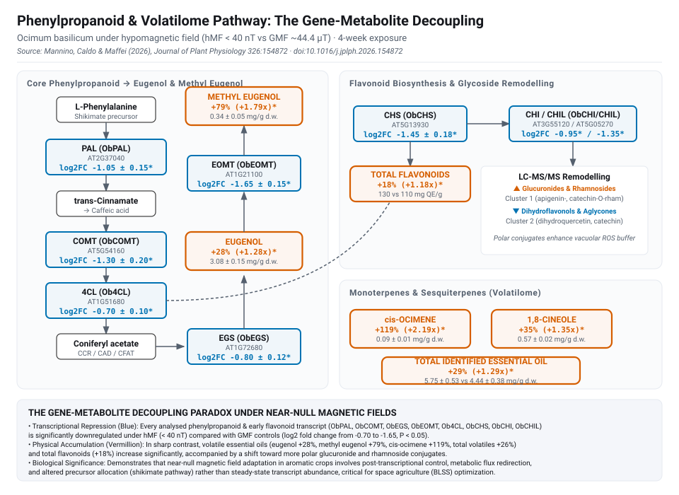

Sweet basil (Ocimum basilicum) exposed continuously for 4 weeks to near-null magnetic fields (<40 nT vs GMF ~44.4 µT): essential oils and flavonoids rise while their biosynthetic transcripts fall, and superoxide dismutase isoforms split in opposite directions.
Source: Mannino, Caldo & Maffei (2026), Journal of Plant Physiology 326:154872, doi:10.1016/j.jplph.2026.154872, Ocimum basilicum.
These are the authors' published results, not a reanalysis. No raw data was deposited in any public repository. The article's Data Availability Statement reads, in full: “Data will be made available on request”
So nothing on this page can be recomputed, re-thresholded or re-tested from source
data. What is drawn is what the authors chose to report, read out of
gene_expression.tsv and re-projected onto the maps. That is a weaker
provenance than the NASA OSDR pages in this atlas, which rest on processed data anyone
can download, and it is labelled differently throughout:
published_results.
near-null magnetic field (<40 nT) against the local geomagnetic field (~44.4 µT), generated in a triaxial Helmholtz coil system and monitored with a three-axis Bartington Mag-03 magnetometer. Values are Mannino's reported
fold change for hMF-grown plants relative to GMF-grown controls, as
mean ± SD.
Two findings that require structural representation:
ObCSD → AT1G08830) is strongly downregulated (log2FC = -1.45 ± 0.15, blue), whereas chloroplast Fe-SOD (ObFSD1 → AT4G25100) is strongly upregulated (log2FC = +1.15 ± 0.12, vermillion). Averaging them into a single node value would yield -0.15 — falsely reporting that superoxide dismutation did not respond. The 2-row heatmap preserves both isoforms side by side.+28%, methyl eugenol +79%, cis-ocimene +119%) and total flavonoids (+18%) increase significantly, yet every measured biosynthetic transcript (ObPAL, ObCOMT, ObEGS, ObEOMT, Ob4CL, ObCHS, ObCHI, ObCHIL) is significantly repressed (log2FC -0.70 to -1.65).In sweet basil under near-null magnetic fields (<40 nT), secondary metabolism decouples from steady-state transcript abundance: blue boxes show significant downregulation across all 8 phenylpropanoid and early flavonoid enzymes, while vermillion boxes show significant physical accumulation of their volatile and flavonoid end-products.

Decoupling of transcript abundance and metabolite accumulation. Blue enzyme boxes carry qRT-PCR log2 fold changes (hMF/GMF ± SD, all P < 0.05); vermillion metabolite boxes carry GC-FID/GC-MS absolute accumulation fold changes and concentrations (mg g⁻¹ dry weight ± SD, P < 0.05).
Each node is tinted by its extreme value; multi-locus nodes where isoforms diverge in sign (such as SUPEROXIDE_DISMUTASES displaying ObCSD vs ObFSD1) render a 2-row heatmap directly inside the node box.

2-Row Heatmap (Isoform Divergence) on SUPEROXIDE_DISMUTASES: AT1G08830 (ObCSD, Cu/Zn-SOD) is downregulated (-1.45, blue) while AT4G25100 (ObFSD1, Fe-SOD) is upregulated (+1.15, vermillion).
Values are the authors' published results from Mannino, Caldo & Maffei (2026), Journal of Plant Physiology 326:154872 (doi:10.1016/j.jplph.2026.154872), not a reanalysis: hMF-grown plants relative to GMF controls after 4 weeks exposure. No raw data was deposited — the Data Availability Statement reads “Data will be made available on request”. Reported as log2 fold change; values are published directly as log2 fold change (hMF/GMF) ± SD from qRT-PCR; no conversion needed. leaves, 1 timepoints (4w). 4 of 8 identifier-bearing nodes received a series (50%); 4 nodes carry no gene identifier and cannot. multi-locus nodes aggregated by extreme at each timepoint. 1 node(s) have loci that disagree in direction at the same timepoint (SUPEROXIDE_DISMUTASES), so their single trace is the aggregator choosing between genes that are doing different things — read those per locus, not as a node.
The numbers on the maps, in full, so the figures can be checked rather than taken on trust. Values are log2 fold change (hMF vs GMF); multi-locus nodes display their 2-row per-locus heatmap.
| Node | Tier | Loci | Trace / 2-Row Heatmap | 4w | Peak |
|---|---|---|---|---|---|
| PLASTID_ROS | T2 | AT4G25100 | +1.15 | +1.15 @ 4w | |
| SUPEROXIDE_DISMUTASES (isoforms diverge: 2-row heatmap) | T4 | AT1G08830 AT4G25100 | -1.45 | -1.45 @ 4w | |
| ASCORBATE_PEROXIDASE | T3 | AT1G07890 | +0.12 | +0.12 @ 4w | |
| CATALASE | T3 | AT1G20630 | -0.68 | -0.68 @ 4w |
Scroll the table sideways to see every timepoint.
AT1G07890, AT1G08830, AT1G20630, AT4G25100.mean ± SD
with no per-gene adjusted p-value, so there is no threshold to mark and none is invented.
The atlas's other overlays carry an asterisk for significance; this one deliberately has
none.PYTHONPATH=src python3 scripts/build_paper_showcase.py --paper Mannino2026
PYTHONPATH=src python3 scripts/build_paper_page.py --paper Mannino2026The supplementary archive is fetched from EuropePMC and cached under
data/external/papers/; the parsed values, per-node series and coverage are
written to results/papers/Mannino2026/record.json,
and this page is generated from that record.
{kind=link}
{kind=link}